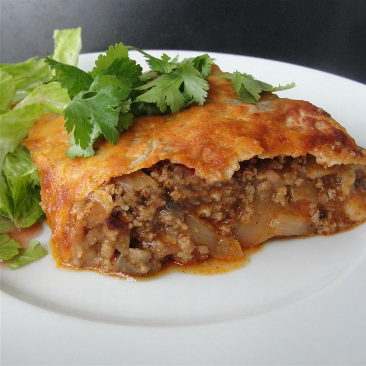

Mexican Casserole

Description
A small dinner pie made with salsa, tortillas, refried beans, cheese, and onions.
Made from refried beans, onion, flour tortillas, salsa, and shredded chease. Easy as that.
Ingredients
- 1 (16oz) can refried beans
- ¾ onion, diced
- 5 (10 inch) flour tortillas
- 1 cup salsa
- 2 cups shredded Cheddar or Colby Jack cheese
Steps
- Preheat oven to 375 degrees F (190 degrees C). Spray a 9-inch pie pan with non-stick cooking spray.
- In a saucepan, cook refried beans and onions (to soften them) on medium-high heat for about 5 minutes.
- Place one tortilla in the bottom of the greased pan.
- Spread about 1/3 cup of the bean mixture over it.
- Layer a few tablespoons of salsa over this.
- Then, place another tortilla over the salsa, and add more of the bean mixture.
- Follow the beans with a big handful of cheese, spreading evenly.
- repeat layers, spreading the ingredients evenly over the tortillas.
- On the top layer, make sure to use lots of salsa and cheese!
- Bake until the cheese is melted, approximately 15 to 20 minutes.